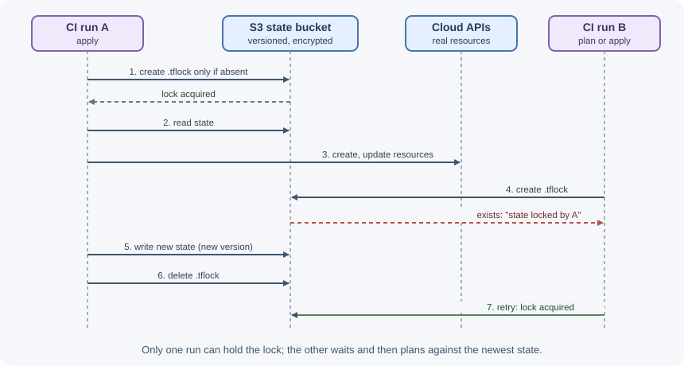
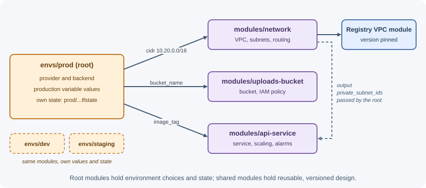

Terraform in Practice¶
Terraform (and its open-source fork OpenTofu, which accepts the same
configuration for everything on this page) turns HCL files into real
infrastructure through providers that talk to cloud and service APIs.
This lesson builds a small but real piece of TaskFlow infrastructure, an
S3 bucket for user uploads with versioning, encryption, lifecycle rules,
and an IAM policy for the API, and uses it to explain providers and
required_providers, resources, data sources, variables, locals,
outputs, the CLI workflow, the dependency graph, remote state with
locking, modules and versioning, separate environments, refactoring with
import, moved, and removed blocks, and running plan and apply from
CI.
Every Terraform snippet on this page was checked with terraform validate
and terraform fmt -check using Terraform 1.17.2 and the AWS provider
6.73.0.
Why it matters¶
Terraform is the most widely used IaC tool, and most of what goes wrong with it is not syntax but practice: state stored on a laptop, two applies at once, a renamed resource that destroys a production bucket, an apply from a developer's machine with administrator rights, a plan nobody read, or one copy of the code per environment slowly drifting apart. Knowing the language is an afternoon; knowing how to run it safely in a team is what makes infrastructure changes boring.
Real-world usage¶
- S3 backend with native locking. The
S3 backend documentation
describes
use_lockfile, which stores a lock file next to the state object (for state keypath/to/key, the lock ispath/to/key.tflock) and needss3:GetObject,s3:PutObject, ands3:DeleteObjecton it. It states that DynamoDB-based locking is deprecated and will be removed in a future minor version, and strongly recommends enabling bucket versioning so state can be recovered. - Import and refactoring. The Terraform documentation on
import blocks
and on refactoring modules with
movedblocks shows how to adopt existing resources and rename or move resources in code through reviewed plans instead of manual state surgery. - Running Terraform in automation. HashiCorp's tutorial Automate Terraform with GitHub Actions describes planning on pull requests, posting the plan for review, and applying on merge to the main branch, the workflow used below.
- Atlantis. Atlantis is an
open-source service that runs
terraform planwhen a pull request is opened, comments the output, and runsapplyon an approved comment, showing how widely the "plan in the PR, apply on approval" model is used.
Popular tools and providers: Terraform CLI, HCP Terraform, OpenTofu,
Terragrunt, Atlantis, the hashicorp/setup-terraform GitHub Action,
tflint, terraform-docs, Checkov, Trivy, and Infracost.
How it works¶
Project layout¶
infra/
modules/
uploads-bucket/ # reusable building block: inputs, resources, outputs
versions.tf
variables.tf
main.tf
outputs.tf
envs/
staging/ # root module: backend, provider, values for staging
versions.tf
main.tf
variables.tf
outputs.tf
prod/ # root module for production, its own state
...
A root module is a directory where you run terraform init, plan,
and apply; it has one state. A child module is reusable code called
from a root module. Each environment is its own root module with its own
backend key, so production and staging never share state.
Providers and required_providers¶
Providers are plugins that know how to talk to one API (AWS, Azure, Google Cloud, Cloudflare, GitHub, Kubernetes). Declare them with a source address and a version constraint:
terraform {
required_version = ">= 1.11"
required_providers {
aws = {
source = "hashicorp/aws"
version = "~> 6.0" # any 6.x, never 7.0
}
}
}
terraform init downloads matching versions and records the exact
choice and checksums in .terraform.lock.hcl. Commit the lock file:
it makes every machine and CI run use the same provider build. Upgrade
deliberately with terraform init -upgrade and review the change.
Resources, data sources, variables, locals, outputs¶
| Block | Purpose | Example |
|---|---|---|
resource |
Something Terraform creates and manages | resource "aws_s3_bucket" "this" { ... } |
data |
Something Terraform only reads | data "aws_caller_identity" "current" {} |
variable |
An input, with type, description, default, validation, sensitive |
variable "bucket_name" { type = string } |
locals |
Named expressions computed inside the module | bucket_name = "taskflow-${var.environment}-uploads" |
output |
A value exported to callers, other tools, or the CLI | output "bucket_arn" { value = aws_s3_bucket.this.arn } |
module |
A call to a child module | module "uploads" { source = "../../modules/uploads-bucket" } |
References between blocks (aws_s3_bucket.this.id) are how Terraform
learns dependencies.
The dependency graph¶
Terraform builds a graph from references: the versioning configuration
references the bucket, so the bucket is created first; the IAM policy
references the bucket ARN, so it waits too; independent resources are
created in parallel (10 at a time by default, -parallelism). Use
depends_on only for dependencies Terraform cannot see from references
(for example a permission that must exist before a service starts using
it). terraform graph prints the graph in DOT format for visualization.
The CLI workflow¶
| Command | What it does |
|---|---|
terraform init |
Configures the backend, downloads providers and modules |
terraform fmt -recursive |
Formats files in the standard style (-check in CI) |
terraform validate |
Checks syntax, types, and references against provider schemas |
terraform plan -out=tfplan |
Computes and saves the changes; changes nothing |
terraform show tfplan |
Prints a saved plan for review |
terraform apply tfplan |
Applies exactly the saved plan |
terraform output -raw uploads_bucket |
Reads an output for scripts |
terraform state list / state show <addr> |
Inspects what is in state |
terraform destroy |
Plans and applies deletion of everything in this root module |
Flags worth knowing: -var-file=prod.tfvars supplies variable values;
-replace=<addr> forces one resource to be recreated; -target limits a
run to some resources and should be kept for emergencies, because it
leaves the rest of the configuration unapplied.
Remote state with locking¶

For a team, state must live in a shared backend with locking. With the S3 backend:
use_lockfile = truemakes Terraform create a.tflockobject next to the state using a conditional write that fails if the object already exists. This S3-native locking was introduced in Terraform 1.10 and is generally available from 1.11, which is why the example requires>= 1.11.- The older
dynamodb_tableoption is deprecated. Both can be set at once while migrating from DynamoDB locking. - Enable bucket versioning (to recover earlier state), default
encryption (or
encrypt = truewith a KMS key), block all public access, and restrict access to the pipeline roles and a few administrators. - The state bucket is created once by a tiny separate configuration (or by hand, documented), because a configuration cannot store its state in a bucket it has not created yet.
Other backends (Azure Blob Storage, Google Cloud Storage, HCP Terraform) provide the same two guarantees: shared state and a lock.
State is sensitive¶
State contains every attribute of every managed resource, including
generated passwords, private keys, and connection strings, in plain text,
even when marked sensitive. Treat read access to state like read access
to production secrets, keep secrets out of Terraform where you can
(reference them from a secret store at runtime instead), and never commit
state to Git.
Modules and versioning¶

Good modules:
- have a small, documented interface: a few required inputs, sensible defaults, typed and validated variables, and the outputs callers need;
- encapsulate a meaningful unit (a private bucket with its policy, a service with its scaling and alarms), not a single resource;
- avoid configuring providers inside child modules; the root module passes providers in;
- are versioned: registry modules with
version = "~> 5.1", Git modules with a tag (source = "git::https://github.com/example/tf-modules.git//uploads-bucket?ref=v1.4.0"), so an environment upgrades a module deliberately.
Promote module versions like application releases: staging moves to
v1.5.0 first, production follows after it has been applied there.
Environments: separate state per environment¶
| Approach | How | Strengths | Weaknesses |
|---|---|---|---|
| Directory per environment (recommended) | envs/staging, envs/prod, each a root module with its own backend key, often its own cloud account |
Clear blast radius, different credentials per environment, environments can differ deliberately | Some repetition (kept small by modules) |
| Workspaces | One root module, terraform workspace select prod switches state |
Very little duplication | Same code and backend credentials for every environment; easy to apply to the wrong workspace; hard to vary structure |
| Wrapper tools (Terragrunt) | Generates backend and inputs per environment from one layout | Removes repetition at scale | Another tool to learn |
Terraform's own documentation notes that CLI workspaces are not a suitable isolation mechanism where environments need separate credentials and access controls; separate root modules and accounts are.
Refactoring safely: import, moved, and removed¶
| Need | Block | Effect |
|---|---|---|
| Adopt a resource created by hand | import (Terraform 1.5+) |
The next plan imports it into state; terraform plan -generate-config-out=generated.tf can draft the resource block |
| Rename or move a resource in code | moved (Terraform 1.1+) |
State is updated to the new address; nothing is destroyed |
| Stop managing a resource without deleting it | removed with lifecycle { destroy = false } (Terraform 1.7+) |
It leaves state but stays in the cloud |
All three appear in plans, go through review, and can be removed from the
code once applied everywhere. They replace error-prone manual commands
such as terraform state mv and terraform import.
Plan in CI, apply on merge¶
- On every pull request:
fmt -check,validate, policy scans, andplanwith a read-only role; post the plan on the pull request. - On merge to
main: plan again and apply that saved plan with a write role that only the main-branch pipeline (and an approval in a protected environment) can use. - Serialize runs per root module (CI
concurrency) in addition to state locking, so applies queue rather than fail.
When to use and when not to use¶
| Situation | Choice |
|---|---|
| Multi-cloud or many SaaS providers (DNS, CDN, monitoring, GitHub) | Terraform or OpenTofu |
| Strictly one cloud with strong native tooling preferences | Consider CloudFormation or CDK (AWS) or Bicep (Azure) |
| Team wants loops, classes, and unit tests in a general-purpose language | Consider Pulumi or CDK |
| Separate environments with different credentials | Directory per environment, not workspaces |
| Short-lived copies of the same stack (per developer, per test) | Workspaces can fit |
| Application deploys (new image versions many times a day) | Usually not Terraform; use the deployment platform or GitOps, and let Terraform create the platform |
Practical examples¶
A reusable module: private, versioned uploads bucket with an IAM policy¶
# modules/uploads-bucket/versions.tf
terraform {
required_providers {
aws = {
source = "hashicorp/aws"
version = ">= 6.0"
}
}
}
# modules/uploads-bucket/variables.tf
variable "bucket_name" {
description = "Globally unique bucket name."
type = string
validation {
condition = can(regex("^[a-z0-9][a-z0-9.-]{1,61}[a-z0-9]$", var.bucket_name))
error_message = "Bucket names use 3-63 lowercase letters, digits, dots, and hyphens."
}
}
variable "noncurrent_version_retention_days" {
description = "How long to keep overwritten or deleted object versions."
type = number
default = 30
}
# modules/uploads-bucket/main.tf: a private, versioned, encrypted bucket for user uploads
resource "aws_s3_bucket" "this" {
bucket = var.bucket_name
}
resource "aws_s3_bucket_public_access_block" "this" {
bucket = aws_s3_bucket.this.id
block_public_acls = true
block_public_policy = true
ignore_public_acls = true
restrict_public_buckets = true
}
resource "aws_s3_bucket_versioning" "this" {
bucket = aws_s3_bucket.this.id
versioning_configuration {
status = "Enabled"
}
}
resource "aws_s3_bucket_server_side_encryption_configuration" "this" {
bucket = aws_s3_bucket.this.id
rule {
apply_server_side_encryption_by_default {
sse_algorithm = "AES256"
}
}
}
resource "aws_s3_bucket_lifecycle_configuration" "this" {
bucket = aws_s3_bucket.this.id
rule {
id = "expire-old-versions"
status = "Enabled"
filter {}
noncurrent_version_expiration {
noncurrent_days = var.noncurrent_version_retention_days
}
abort_incomplete_multipart_upload {
days_after_initiation = 7
}
}
}
data "aws_iam_policy_document" "read_write" {
statement {
sid = "ListBucket"
actions = ["s3:ListBucket"]
resources = [aws_s3_bucket.this.arn]
}
statement {
sid = "ReadWriteObjects"
actions = ["s3:GetObject", "s3:PutObject", "s3:DeleteObject"]
resources = ["${aws_s3_bucket.this.arn}/*"]
}
}
resource "aws_iam_policy" "read_write" {
name = "${var.bucket_name}-read-write"
policy = data.aws_iam_policy_document.read_write.json
}
# modules/uploads-bucket/outputs.tf
output "bucket_name" {
value = aws_s3_bucket.this.bucket
}
output "bucket_arn" {
value = aws_s3_bucket.this.arn
}
output "read_write_policy_arn" {
value = aws_iam_policy.read_write.arn
}
- Since AWS provider 4, bucket settings are separate resources
(
aws_s3_bucket_versioning,..._server_side_encryption_configuration,..._lifecycle_configuration), each referencing the bucket. - The policy grants only what the API needs on this bucket: list the bucket, and get, put, and delete objects in it.
- Versioning plus a noncurrent-version expiry protects against accidental overwrites without keeping old versions forever.
The production root module¶
# envs/prod/versions.tf: Terraform, provider, and state settings for production
terraform {
required_version = ">= 1.11"
required_providers {
aws = {
source = "hashicorp/aws"
version = "~> 6.0"
}
}
backend "s3" {
bucket = "example-taskflow-terraform-state"
key = "prod/uploads/terraform.tfstate"
region = "eu-west-1"
encrypt = true
use_lockfile = true # S3-native state locking (no DynamoDB table needed)
}
}
# envs/prod/main.tf: production wiring for TaskFlow uploads
provider "aws" {
region = var.region
default_tags {
tags = {
Project = "taskflow"
Environment = var.environment
ManagedBy = "terraform"
}
}
}
data "aws_caller_identity" "current" {}
locals {
# Account ID keeps the globally unique bucket name predictable per account
bucket_name = "taskflow-${var.environment}-uploads-${data.aws_caller_identity.current.account_id}"
}
module "uploads" {
source = "../../modules/uploads-bucket"
bucket_name = local.bucket_name
noncurrent_version_retention_days = 90
}
# The API's role is created by the platform team's stack; we only attach a policy to it
data "aws_iam_role" "api" {
name = var.api_role_name
}
resource "aws_iam_role_policy_attachment" "api_uploads" {
role = data.aws_iam_role.api.name
policy_arn = module.uploads.read_write_policy_arn
}
# envs/prod/variables.tf
variable "environment" {
description = "Deployment environment name."
type = string
default = "prod"
validation {
condition = contains(["dev", "staging", "prod"], var.environment)
error_message = "environment must be dev, staging, or prod."
}
}
variable "region" {
type = string
default = "eu-west-1"
}
variable "api_role_name" {
description = "Existing IAM role used by the TaskFlow API workload."
type = string
default = "taskflow-api-prod"
}
# envs/prod/outputs.tf
output "uploads_bucket" {
description = "Set as UPLOADS_BUCKET in the API's configuration."
value = module.uploads.bucket_name
}
cd envs/prod
terraform init
terraform fmt -check -recursive ../..
terraform validate
terraform plan -out=tfplan
# Plan: 7 to add, 0 to change, 0 to destroy.
terraform apply tfplan
terraform output -raw uploads_bucket # feed into the API's configuration
default_tags labels every resource with project, environment, and owner
without repeating tags in each block. The data sources read the account
ID and an IAM role that another team manages, a clean way to connect
stacks without sharing state.
Bootstrapping the state bucket¶
# bootstrap/main.tf: run once with local state, then keep this tiny stack separate
terraform {
required_version = ">= 1.11"
required_providers {
aws = {
source = "hashicorp/aws"
version = "~> 6.0"
}
}
}
provider "aws" {
region = "eu-west-1"
}
resource "aws_s3_bucket" "state" {
bucket = "example-taskflow-terraform-state"
lifecycle {
prevent_destroy = true # a plan that would delete it fails
}
}
resource "aws_s3_bucket_versioning" "state" {
bucket = aws_s3_bucket.state.id
versioning_configuration {
status = "Enabled"
}
}
resource "aws_s3_bucket_public_access_block" "state" {
bucket = aws_s3_bucket.state.id
block_public_acls = true
block_public_policy = true
ignore_public_acls = true
restrict_public_buckets = true
}
After the first apply you can add a backend "s3" block to this
bootstrap stack and run terraform init -migrate-state to move its own
state into the bucket it created.
Refactoring: adopt, rename, and stop managing¶
# refactor.tf: adopt an existing bucket and record a rename, without recreating anything
import {
to = module.uploads.aws_s3_bucket.this
id = "taskflow-prod-uploads-123456789012"
}
moved {
from = aws_iam_role_policy_attachment.api_s3
to = aws_iam_role_policy_attachment.api_uploads
}
# legacy.tf: forget the old exports bucket, keep it in the cloud
removed {
from = aws_s3_bucket.legacy_exports
lifecycle {
destroy = false
}
}
The plan shows "1 to import" and "has moved to" lines instead of destroy and create. After the change is applied in every environment, the blocks can be deleted.
Plan on pull requests, apply on merge¶
# .github/workflows/terraform-prod.yml
name: Terraform (prod)
on:
pull_request:
paths: ["infra/envs/prod/**", "infra/modules/**"]
push:
branches: [main]
paths: ["infra/envs/prod/**", "infra/modules/**"]
permissions:
contents: read
id-token: write
pull-requests: write
concurrency:
group: terraform-prod
cancel-in-progress: false
defaults:
run:
working-directory: infra/envs/prod
jobs:
plan:
if: github.event_name == 'pull_request'
runs-on: ubuntu-latest
steps:
- uses: actions/checkout@v7
- uses: hashicorp/setup-terraform@v4
with:
terraform_version: "1.17.2"
terraform_wrapper: false
- uses: aws-actions/configure-aws-credentials@v6
with:
role-to-assume: arn:aws:iam::123456789012:role/taskflow-terraform-plan
aws-region: eu-west-1
- run: terraform fmt -check -recursive ../..
- run: terraform init -input=false
- run: terraform validate
- run: terraform plan -input=false -lock=false -no-color -out=tfplan
- run: terraform show -no-color tfplan > plan.txt
- uses: actions/github-script@v9
with:
script: |
const fs = require("fs");
const fence = "`".repeat(3);
const plan = fs.readFileSync("infra/envs/prod/plan.txt", "utf8").slice(-60000);
await github.rest.issues.createComment({
...context.repo,
issue_number: context.issue.number,
body: `### Terraform plan (prod)\n${fence}\n${plan}\n${fence}`,
});
apply:
if: github.event_name == 'push'
runs-on: ubuntu-latest
environment: production # required reviewers before this job runs
steps:
- uses: actions/checkout@v7
- uses: hashicorp/setup-terraform@v4
with:
terraform_version: "1.17.2"
terraform_wrapper: false
- uses: aws-actions/configure-aws-credentials@v6
with:
role-to-assume: arn:aws:iam::123456789012:role/taskflow-terraform-apply
aws-region: eu-west-1
- run: terraform init -input=false
- run: terraform plan -input=false -out=tfplan
- run: terraform apply -input=false tfplan
- The plan role can read state and resources but change nothing; the
apply role can write and trusts only
mainin theproductionenvironment (see the OIDC trust policy in secrets management). - Pinning
terraform_versionkeeps CI and laptops on the same release. - Posting plans is fine for private repositories; Terraform hides values marked sensitive, but review what your plans print before posting them anywhere public.
Best practices¶
- Pin Terraform and provider versions; commit
.terraform.lock.hcl. - Keep one root module and one state per environment; prefer separate cloud accounts for production.
- Store state remotely with locking, versioning, encryption, and tight access; bootstrap the state bucket separately.
- Build small, versioned modules with typed, validated inputs and useful outputs; promote module versions through environments.
- Use
default_tagsfor ownership and cost tracking. - Refactor with
moved,import, andremovedblocks, never by editing state. - Protect stateful resources with
prevent_destroyand read every-/+in a plan. - Plan on pull requests with a read-only role; apply on merge with a separate write role and an approval for production.
- Run
fmt,validate, a linter, and policy checks in CI.
In production¶
- "Error acquiring the state lock."
Detect: plan or apply fails with the lock holder's ID and time.
Cause: another run is in progress, or a crashed run left the lock
behind. Fix: wait, or confirm no run is active and remove the stale
lock with
terraform force-unlock <LOCK_ID>; serialize CI runs withconcurrency. - A rename planned to destroy and recreate a bucket.
Detect: the plan shows
-for the old address and+for the new one. Cause: the resource or module was renamed in code. Fix: add amovedblock and plan again; it should show "has moved to". - "Saved plan is stale." Detect: apply refuses the plan file. Cause: state changed after the plan was made (another apply ran). Fix: plan again and review the new plan; this is Terraform protecting you.
- CI and a developer get different plans.
Detect: plans differ for the same commit. Cause: different provider
versions (lock file not committed) or different variable files. Fix:
commit the lock file, pin
required_version, and run plans only in CI for shared environments. - Someone applied staging code to production. Detect: production resources renamed or resized unexpectedly. Cause: workspaces, or one set of credentials for every environment. Fix: a root module and cloud account per environment, and roles that can only touch their own environment.
- The state file disappeared or was overwritten. Detect: plan wants to create everything again. Cause: state deleted, overwritten by an old local copy, or a wrong backend key. Fix: restore the previous version from the versioned bucket, and lock down write access to state.
Important terminology¶
- Provider: a plugin that manages resources in one API.
- Resource: an infrastructure object Terraform manages.
- Data source: an object Terraform reads but does not manage.
- Variable, local, output: a module's inputs, internal values, and exported values.
- Root module: the directory where Terraform runs, with one state.
- Child module: reusable configuration called from another module.
- Backend: where state is stored and how it is locked.
- State lock: a mechanism that prevents concurrent writes to state.
- Lock file (
.terraform.lock.hcl): the record of exact provider versions and checksums. - Saved plan: a plan file applied later exactly as reviewed.
moved,import,removedblocks: declarative refactoring of what Terraform manages.- Workspace: a named state for the same configuration.
Common mistakes and misconceptions¶
- Keeping state locally or committing it to Git.
- Not committing the provider lock file.
- Using workspaces to separate production from development.
- Renaming resources without
movedblocks. - Applying from laptops with administrator credentials.
- Using
-targetroutinely, leaving configuration partially applied. - Putting secrets into variables and assuming
sensitivekeeps them out of state. - Creating one giant root module for everything, so every plan is slow and every change risky.
Revision questions¶
- What do
required_providersand.terraform.lock.hcleach control? - How does Terraform decide the order in which to create resources?
- How does S3-native state locking work, and which Terraform version made it generally available?
- Why are separate root modules preferable to workspaces for staging and production?
- You renamed
aws_s3_bucket.uploadstomodule.uploads.aws_s3_bucket.this. What block prevents data loss, and what will the plan show? - When would you use an
importblock, and when aremovedblock? - A plan reports "Plan: 7 to add". Using the module on this page, list the seven resources.
- Describe a CI design in which pull requests can plan but only merges to
maincan apply to production.